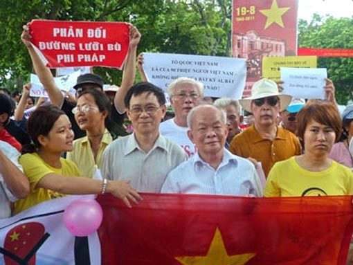

Chương 8
Như tôi đã nói ở đầu tập hồi ký này, Bảy Trân (Nguyễn Văn Trân) là một người cộng sản hiếm có, nói sao làm vậy. Ông là con một điền chủ ở Nam Bộ, cha chết sớm, ở với chú. Năm 15 tuổi đã sang Pháp học đến tú tài rồi đi hoạt động cách mạng, qua Liên Xô học trường Đảng cao cấp, quay lại Pháp, rồi về Việt Nam hoạt động. Ông kể với tôi: “Tao về Việt Nam năm 1930 theo một tàu thủy chở khách từ Marseille về Sài Gòn, do một thiếu tá Pháp đảng viên đảng Cộng Sản Pháp làm thuyền trưởng. Ông thiếu tá này giấu tao dưới boong tàu, hằng ngày cho người đem thức ăn xuống. Ông dặn: Ăn xong thì ỉa vào bát và ném xuống biển để khỏi lộ. Cứ thế tao sống một tháng dưới boong tàu cho đến khi về đến Sài Gòn. Lúc lên bờ, mật thám Tây, Ta giăng kín trên bến. Nhưng ông thiếu tá cùng tao sóng đôi, vừa đi vừa nói chuyện nên qua được vòng vây mật thám. Tiễn tao đi một đoạn xa thì ông mới quay lại”.
Người cán bộ cộng sản cao cấp này xuất hiện ở nhà tôi như đã kể ở đầu sách, với tư cách là sui gia với bố mẹ tôi, đã gây cho cả dòng họ tôi một sự ngạc nhiên về người cộng sản. Thời ấy, sau hòa bình năm 1954, cả miền Bắc sống trong không khí hừng hực của đấu tranh giai cấp, Cải cách ruộng đất, cải tạo tư sản; nhà thờ, đình chùa được xem như những địa chỉ đen. Người ta phá đình, phá chùa, vặn cổ bụt ném xuống ao. Bàn thờ tổ nhà tôi, trừ ông nội tôi ngày tết ngày giỗ chính tay cụ thắp hương, vái lại, còn không ai ngó ngàng gì đến. Vậy mà ông cán bộ cộng sản cao cấp này, lại là dân Nam Bộ, lần đầu tiên đến nhà tôi đã xin phép ông nội tôi được thắp ba nén hương và chắp tay vái lạy bàn thờ tổ. Ông nội tôi nhận ra, đây là một nhà cách mạng chân chính. Từ đó, mỗi khi “chú Bảy Trân” như tôi vẫn gọi theo cách gọi của chị ruột tôi, người nhận ông là bố chồng danh dự, xuống nhà tôi chơi, chú đều được ông nội tôi đón tiếp rất niềm nở.
Theo cách phân loại con người qua ba tiêu chí: thông minh, lương thiện và cộng sản, mà ông Hà Sĩ Phu nói đến, thì: Nếu thông minh mà cộng sản thì gian hùng như Lê Đức Thọ, nếu lương thiện mà cộng sản thì bầm dập, nếu thông minh và lương thiện thì không theo cộng sản. Vậy thì ông Bảy Trân ở loại thứ hai. Vì thế ông bầm dập. Chỉ vì khi học ở trường đảng Nguyễn Ái Quốc để chuẩn bị vào Trung ương và đi làm đại sứ Việt Nam tại Liên Xô, học trò Bảy Trân đã theo tinh thần dân chủ của Aristote “chân lý quý hơn thầy” dám cãi lại Tổng Bí thư Trường Chinh: Thanh niên Tiền phong ở Nam Bộ là của ta, không phải của Nhật như thầy giảng nên chỉ sau đó ít lâu là về vườn!
Điều tôi ngạc nhiên nhất là sau khi thất sủng, Bảy Trân đã lên Bắc Ninh xin một quả đồi (thời đó xin đất rất dễ) để ngày ngày cuốc đất trồng dứa (khóm). Tôi lúc đó đang là sinh viên năm thứ hai, nghỉ hè đạp xe đạp lên chơi với “chú Bảy”, thấy ông vẫn vui vẻ say sưa trồng dứa. Tôi ở chơi cả tuần lễ với chú Bảy. Ông bảo tôi, mày đưa cái bản đồ thế giới treo tường kia lại đây, tao chỉ cho mày những nơi tao đã ở. Ông kể: “Có lần tao ở nhà một nữ đảng viên Cộng sản Đức, thấy tao cả mấy tháng trời toàn nghiên cứu tài liệu rồi viết lách, không trai gái bồ bịch gì cả, một buổi bà ấy bảo: Hôm nay tao cho mày ngủ với tao, mày đáng thương quá. Thế là tối hôm ấy tao được sang buồng ngủ chung với bà ấy!(!)”
Nhà chú Bảy dưới chân đồi, dĩ nhiên là nhà lá, nhưng mát mẻ hơn ở Hà Nội về mùa hè nhiều. Tôi đã được đọc tập hồi ký viết tay của ông. Đây là một tập hồi ký cách mạng rất giá trị, đặc biệt về cuộc Nam Kỳ khởi nghĩa năm 1940. Lúc đó Bảy Trân thâm nhập vào lãnh địa của đảng cướp Bình Xuyên để hoạt động. Khi nhận được lệnh khởi nghĩa, ông đã biết là khởi nghĩa “non”. Vì thế, ông tổ chức một đường dây liên lạc trong đêm 22 rạng ngày 23/11/1940. Ông cho người gác ở dọc đường từ nam Sài Gòn về Cần Giuộc Long An. Liên tục chạy xe đạp để thông tin. Nếu Sài Gòn khởi nghĩa thành công thì ông mới phát lệnh khởi nghĩa Cần Giuộc. Khi được biết ở Sài Gòn chỉ nổ ra khởi nghĩa ở Hóc Môn, Mười tám thôn Vườn Trầu, rồi tắt ngấm, ông đã ra lệnh giải tán anh em Bình Xuyên ai về nhà nấy và tiếp tục đi ăn cướp (ông còn dặn họ, cướp được của nhà giàu thì chia cho dân nghèo). Nhưng một số anh em Bình Xuyên hăng máu đánh Pháp, đã chuẩn bị cho cuộc khởi nghĩa, nghe được lệnh giải tán từ mồm Bảy Trân, đã hè nhau trói Bảy Trân lại chuẩn bị xử bắn! May quá, có người là kẻ kề bên trong Bình Xuyên, hiểu biết hơn, đã nói: “Thầy Bảy không phải là hạng người sọc dưa như thế, thầy là trí thức nên hiểu biết”. Thế là Bảy Trân thoát chết. Ai đọc tiểu thuyết “Người Bình Xuyên” của nhà văn Nguyên Hùng sau này, nhân vật “Thầy Bảy” trong đó chính là Bảy Trân ngoài đời.
Nhờ sự sáng suốt của Bảy Trân mà cơ sở của đảng Cộng Sản ở một số nơi còn giữ được. Lê Duẩn, Trần Văn Giàu giạt xuống miền Tây, sau này nối lại được với cơ sở còn “nguyên vẹn” của Bảy Trân ở Cần Giuộc. Ông kể với tôi: “Sau Nam kỳ Khởi Nghĩa, tao về quê. Thằng Bazin, trùm mật thám Sài Gòn dẫn lính về tận nhà tao. Nó hỏi: Trong Nam kỳ khởi nghĩa mày làm gì? Tao trả lời: Ở nhà với vợ! Nó quát: Nói láo! Thằng này ngày xưa ở Paris học cùng lớp với tao, nên tao chỉ vào mặt nó mắng: Mày biết thừa tao từng đi học trường Đảng cao cấp ở Moscou (Moscow). Tao biết lúc nào thì khởi nghĩa, nếu tao mà khởi nghĩa thì mày không còn đến hôm nay để đến đây mà đòi bắt tao! Đuối lý, nó dẫn lính về! Bà con trong ấp Phú Lạc xã An Phú được một bữa đứng coi một Tây một ta chửi nhau bằng tiếng Tây rồi thằng Tây cút xéo!”
Cuốn hồi ký của Bảy Trân là một tài liệu rất trung thực về Nam Kỳ khởi nghĩa mà tôi đã được đọc theo yêu cầu của ông: “Mày là sinh viên Văn khoa, tao thì tiếng Tây rành hơn tiếng Ta nên mày đọc và chữa ngữ pháp, chính tả cho tao!” Vì thế tôi đã đọc rất kỹ. Sau này, con trai lớn của ông là Ba Đăng (Nguyễn Hồng Đăng) có đem về Sài Gòn nhưng không một nhà xuất bản nào chịu in! (Thật là hoài phí, thời đó chưa có mạng Internet). Bây giờ cả Bảy Trân và Ba Đăng đã đi xa, không biết cuốn hồi ký đó lưu lạc ở đâu (Bảy Trân còn một người con trai nữa là Nguyễn Hồng Kỳ, anh này đang học luật ở Hà Nội thì ông bảo anh đi B, và anh đã hy sinh tại chiến trường B).
Có một chuyện mà tôi không bao giờ quên từ những năm 1960 ở Hà Nội. Ba Đăng gặp tôi ở Hoàng Mai, anh bảo tôi: “Hồ Chí Minh là tay bịp đấy! Mày đừng có tin”. Thời đó mà nói ông Hồ như thế là phạm thượng lắm, đi tù như chơi. Vì thế bà chị cả tôi, hồi mới giải phóng thủ đô làm công an hộ khẩu ở khu Ba Đình, đã từng ngồi trong thùng phiếu (to) để chờ kiểm soát lá phiếu của một cử tri nào đó cả gan gạch tên ông Hồ khi bầu cử quốc hội, bảo tôi: “Cậu chớ nghe lời Ba Đăng nói bậy bạ, đi tù có ngày”.
Ba Đăng về Nam sau 1975, làm đến Phó Chủ Nhiệm Ủy ban Kế hoạch tỉnh Tây Ninh, nhưng khi đi họp cải tạo tư sản ở dinh Thống Nhất, nghe ông Đỗ Mười định nghĩa “cải tạo là cướp đoạt lại của giai cấp tư sản”, Ba Đăng cãi lại: “Người cách mạng không cướp của ai cả!” Thế là anh lại phải về vườn như cha anh đã cãi lại Trường Chinh năm xưa!
Sở dĩ tôi dùng từ huyền thoại gắn với Bảy Trân, vì cả hai cha con ông đều nghĩ sao nói vậy, nói sao làm vậy chân chất như con người trong cổ tích thần thoại giữa một xã hội, một chế độ lấy dối trá làm nguyên tắc tồn tại. Năm 1981, tôi mới từ Hà Nội vô Sài Gòn, còn tá túc ở nhà bà chị tôi, Ba Đăng gặp tôi nói: “Mày vô đây định cư, mai mốt có biến loạn, bọn cục bộ địa phương nó truy lùng Bắc kỳ thì đến nhà tao lánh nạn. Xưa kia ở Hà Nội, gia đình mày cưu mang nhà tao, bây giờ có gì nhà tao lại cưu mang nhà mà”. Ông con nói thế, còn ông bố Bảy Trân thấy tôi đến chơi thì bảo: “Nấu cơm cho thằng Khải nó ăn, ngày xưa ở miền bắc, tao luôn ăn cơm nhà nó!”
Năm 1995, Bảy Trân tròn 90 tuổi, gia đình tổ chức mừng thọ. Khi tôi đến, gặp cả giáo sư Trần Văn Giàu. Ông Giàu và Mười Giáo xưa kia học chung một khóa ở trường Đảng cao cấp Moscou với Bảy Trân. Ngày sinh nhật của Lenin hằng năm ba vị này vẫn họp mặt liên hoan, vì thế giới trí thức Sài Gòn mới chơi chữ, gọi các ông là “Le trois Mouscoutaires” nhại mấy chữ “Les trois Mousquetaires” (Ba người ngự lâm pháo thủ) tên tác phẩm nổi tiếng của Alexandre Dumas. Tôi còn thấy một bức trướng của vợ chồng Phan Văn Khải mừng thọ “chú Bảy Trân”. Tôi hỏi Ba Đăng, ngoài bức trướng này còn cái gì nữa không? Ba Đăng nói: “Còn bao thư 500.000 đồng!” Tôi nói: “Phó Thủ tướng mừng thọ 90 tuổi chú ruột vợ là lão thành cách mạng mà ít thế thôi à?” Ba Đăng cười hóm hỉnh: “Mừng nhiều “lộ” thì sao?” Anh còn nói thêm: “Hai vợ chồng đến rồi về liền, không thèm dự liên hoan, VIP mà(!)”. Tại cuộc liên hoan này, tôi còn may mắn gặp các “hảo hán” của đảng cướp Bình Xuyên năm xưa như bác Mai Văn Vĩnh, nay là đại tá quân đội, đã nghỉ hưu. Bác Vĩnh đã ngoài 80 tuổi mà chắc nịch như một cây gỗ sao. Khi chụp hình bác Vĩnh, tôi còn nói đùa: “Khi trai trẻ chắc bác khỏe lắm, đi ăn… là phải(!)” bác Vĩnh vui vẻ bảo tôi: “Năm 1940 tôi theo thầy Bảy đi cách mạng bỏ nghề ăn cướp!”
Sau khi tôi chụp hình hai vợ chồng chú Bảy và mọi người đến chúc tụng, tặng quà, một vị vỗ vai tôi bảo: “Còn bác Trần Văn Giàu kia sao không chụp?” Tôi buột miệng nói: “Bác ấy vừa được nhận danh hiệu “Nhà giáo nhân dân”, “không bằng móng chân hoa hậu”. Tôi không dám chụp “móng chân hoa hậu!” Vị này có hơi men nên túm cổ áo tôi nói: “Thằng Bắc kỳ này nói láo!” Ba Đăng chạy lại: “Nó là Bắc Kỳ mà tử tế lắm, gia đình nó là sui gia với ông già tao đấy!” Nhưng sau đó tôi vẫn kiên quyết từ chối chụp hình bác Giàu. Tôi nói: “Vị thế bác Trần Văn Giàu thì phải đi trao danh hiệu cho những kẻ khác, chứ việc gì phải đi nhận danh hiệu từ đám con nít trao cho mình! Ngược đời!” Ba Đăng nói: “Thằng Bắc Kỳ này nói có lý, tao đồng ý!”
Ba Đăng tính rất ngang tàng, râu quai nón, nói năng không cần biết người nghe mình là ai. Vì thế anh mới dám đứng lên cãi ngay ông Đỗ Mười đang hùng hổ đòi “cướp đoạt lại của giai cấp tư sản”!
Sau cuộc mừng thọ đó, nhân kỷ niệm 55 năm Nam Kỳ khởi nghĩa (1940-1955) tôi có viết một bài về chú Bảy Trân, nhan đề “90 tuổi lão chiến sĩ Nam Kỳ khởi nghĩa Nguyễn Văn Trân” đang trên “Tuần san SGGP Thứ bảy” số ra ngày 25/11/1995, kèm hai tấm hình vợ chồng chú Bảy trong lễ mừng thọ 95 tuổi. Điều khôi hài nhất là, sau khi bài đó đăng lên, Tổng Biên tập Vũ Tuất Việt bị Ban Khoa giáo Thành ủy TPHCM gọi điện xuống phê phán chất vấn(!). Các chú con nít ở Ban Khoa giáo này nhầm Nguyễn Văn Trân với Nguyễn Văn Trấn vừa bị kỷ luật vì chống Đảng trong tác phẩm “Gửi mẹ và quốc hội”. Nguyễn Văn Trấn cũng là một lão thành cách mạng kỳ cựu của Nam Bộ, nổi tiếng đến mức “chết danh” là “héros de Chợ Đệm (Anh hùng Chợ Đệm). Trong những năm đầu kháng chiến chống Pháp, khi Nguyễn Văn Trấn ra Bắc, Tướng Giáp đã báo cáo Cụ Hồ. “Thưa Bác, ‘héros de Chợ Đệm’ đã ra!” Ông Trấn quê ở Chợ Đệm Long An. Từng viết cuốn “Chợ Đệm quê tôi” nổi tiếng. Trong cuốn sách đó, ông có dẫn câu ca dao Nam Bộ “Cô kia cắt cỏ bên cồn/Lội đi lội lại cái lồn đóng rêu” rồi kết luận: “Vậy mà khi cắt được bó cỏ lên bờ thì cán bộ thuế xông ra đánh thuế ngay”, để chỉ trích chính sách thuế của ta sau 1975.
Chính vỉ hai ông Nguyễn Văn Trân và Nguyễn Văn Trấn đều là nhân vật nổi tiếng chống Pháp nên thời Pháp, thằng Tây nhiều lần xuất giấy bắt lộn hai ông. Vì chữ Tây không đánh dấu. Cả hai đều là Nguyen Van Tran! Nhưng đến thời Ta, đến năm 1995 mà Ban Khoa giáo Thành ủy cũng lộn như Tây thì mới nực cười. Chứng tỏ rằng, các chú con nít ở Ban Khoa giáo chẳng học hành gì, có học cũng là bằng dỏm, chẳng hiểu gì lịch sử của chính Nam Bộ mà đòi lãnh đạp báo chí, còn gọi điện nạt Tổng biên tập Vũ Tuấn Việt đã đăng bài ca ngợi một kẻ phản bội cách mạng, viết sách chống Đảng là Nguyễn Văn Trấn! Tuất Việt là tay Tổng biên tập cao thủ đã làm thinh! Ý ông muốn nói: “Vậy thì đã sao!”
Cuộc đời Bảy Trân như một pho tiểu thuyết hoành tráng, không gian mênh mông, thời gian thăm thẳm, biết bao thăng trầm. Những căn nhà cổ, những hàng cau ở Mười tám thôn Vườn Trầu Hóc Môn Bà Điểm còn như in bóng một chú Bảy đi bán dạo dầu cù là trên chiếc xe đạp cọc cạch, với cái cặp da đã sờn gáy, bạc màu, len lỏi khắp các đường quê để tuyên truyền cách mạng, tuyên truyền đánh Pháp.
Là người cùng thời với chú Bảy Trân, biết con người này từ đầu những năm 50 thế kỷ trước, tôi nghĩ, nhờ sự hiểu biết và sáng suốt của ông nên đã tránh được bao nhiêu đầu rơi máu chảy vùng Cầu Giuộc Long An trong Nam Kỳ khởi nghĩa và giữ được an toàn cho cơ sở cách mạng. Ông nói: “Nếu trên Sài Gòn mà khởi nghĩa không đè được cái cổ thằng Tây xuống đất mà ở Long An lại nắm cái chân thì nó đạp mình xuống hố!”
Với cá nhân tôi, cũng nhờ ông chở tôi bằng chiếc xe đạp vào gặp Thầy Tuất ở trường Đại học Sư phạm Hà Nội mà sau hai lần “thi trượt” tôi đã lại “đỗ” vào khoa Văn ở cái thời mà số phận hàng triệu thanh niên “miền Bắc XHCN” do những ông công an xóm ở khắp nơi định đoạt!
Nguyễn Khắc Viện Như Tôi Biết
Bác sĩ Nguyễn Khắc Viện có một cuộc đời rất kỳ diệu. Lúc ba mươi hai tuổi ông bị bệnh nặng ở Pháp, tưởng đã cầm chắc cái chết. Bác sĩ Tây đã dự kiến ông “không sống quá vài năm”! Bạn ông là Phạm Quang Lễ - tức Trần Đại Nghĩa - trước lúc theo Cụ Hồ về nước đã đến thăm ông và rất bùi ngùi!
Nhưng Nguyễn Khắc Viện đã đọc sách triết học Trung Hoa, Ấn Độ ngay tại bệnh viện ông đang nằm và tìm ra phương pháp tự chữa bệnh cho mình bằng thuật yoga của Ấn Độ, khí công nhu quyền Trung Hoa, sau này ông kết hợp hai thuật trên với khoa sinh lý học hiện đại, hình thành thuật dưỡng sinh nổi tiếng.
Một buổi chiều cuối tháng Tư năm 1988 tại thành phố Mỹ Tho êm ả bên bờ sông Tiền, bác sĩ Nguyễn Khắc Viện cởi áo cho tôi coi tấm lưng bị bằm nát vì bảy lần phẩu thuật phổi của ông (cắt một lá phổi và một phần ba lá thứ hai)! Tôi thật sự kinh ngạc khi thấy tấm lưng của ông Viện chằng chịt như cái bản đồ sông rạch đồng bằng sông Cửu Long của tôi đang treo trên tường! Một ông già thân hình gầy guộc với đầy những thương tích bên ngoài như thế, bên trong chỉ còn không đầy một lá phổi, vậy mà còn múa võ, đá cầu, lên diễn đàn diễn thuyết, đi Đông đi Tây, vào Nam ra Bắc, mỗi năm in một cuốn sách. Vợ tôi thấy vậy lạ quá, nhưng không dám hỏi! Ông già Viện hóm hỉnh từ tốn kể cho vợ tôi nghe về cuộc chiến thầm lặng của ông nửa thế kỷ qua với định mệnh.
Chiều tối hôm đó, vợ và hai con nhỏ của tôi đã ngồi nghe bác sĩ Nguyễn Khắc Viện kể về “con đường sống” của mình như nghe một ông già kể chuyện cổ tích. Vợ tôi đã nghẹn ngào hỏi tôi: “Sao lại có người yêu nước thương dân thế hở anh”.
Đó là lần thứ hai bác sĩ xuống thăm bà con nông dân đồng bằng sông Cửu Long và tá túc tại nhà tôi. Bác xách cái túi bang (một loại cỏ hoang giống như cói), đội nón lá, xuống xe đò tìm đến nhà tôi. Vì lâu ngày quên ngõ nên ông phải hỏi thăm và được một bà lão tốt bụng dẫn đường, và bà lão tưởng rằng ông già hỏi thăm đường là một sĩ quan chế độ cũ đi tù mới về! Chính bà ta hỏi bác Viện điều đó và bác đã gật đại! Ở chơi ít ngày, bác Viện luôn hỏi thăm vợ chồng tôi về công việc đồng áng của bà con nông dân đồng bằng sông Cửu Long, nên vợ tôi xem bác là một người yêu nước kỳ lạ! Tôi phải giải thích cho bả: Nhờ luôn luôn luyện thở, ăn uống điều độ, ung dung tự tại và lạc quan yêu đời nên bác Viện mới sống được đến ngày hôm nay để đi thăm bà con nông dân đồng bằng.
Chính cái đêm hôm đó, tôi thao thức không ngủ được. Và rồi xúc cảm làm một bài thơ con cóc, ghi lại tâm trạng mình. Bài thơ tôi đặt tên là “Vô đề”:
Đãi ông một bữa cơm nghèo
Trải giường ông nghỉ lòng nhiều xót thương
Lưng già ít thịt nhiều xương
Sáu, năm vết mổ sẹo còn đầy vai
Con đường dân chủ công khai
Ông như lão tướng một đời xông pha
Bọn quan kiêu - lũ gian tà
Kính ông ngoài mặt, bỉ dè sau lưng
Núi sông được mấy anh hùng
Thế gian được mấy cõi lòng trinh trung?
Mỹ Tho 1988
Kể từ buổi chiều được tận mắt nhìn thấy tấm lưng “có một không hai” của bác sĩ Nguyễn Khắc Viện, tôi mới hiểu thế nào là sức sống ở một con người có ý chí, sống có mục đích cao đẹp.
Chính bác sĩ Nguyễn Khắc Viện cũng nói rằng, khi Cách Mạng Tháng Tám thành công, cái chết của mình đã được người ta báo trước, nhưng Cách Mạng Tháng Tám đã mang đến cho người trí thức như ông một lẽ sống, và nhờ xác định được lẽ sống, ông mới tìm ra phương pháp để cứu sống mình. Sau này tôi mới hiểu vì sao, rất nhiều người, trong đó có tôi, khi mới gặp ông lần đầu, đều có nhận xét rằng ông Viện nói rất khẽ (nhỏ) và rất khó nghe(!) Thì ra ông phải “tiết kiệm hơi sức”. Tiết kiệm suốt một đời (từ lúc ba mươi tuổi đến lúc tám mươi lăm tuổi) để sống. Thì ra không phải trời cho anh sức khỏe là anh có thể sống lâu hơn người. Có sức mà không biết tiết kiệm sức thì chưa chắc ai đã hơn ai. Cuộc đời bác sĩ Nguyễn Khắc Viện cho tôi một bài học. Tiết kiệm sức để sống có ích.
Bình sinh bác sĩ Nguyễn Khắc Viện nói với mọi người: “Hơi sức tôi không đủ mạnh để thổi tắt một ngọn đèn dầu!”
Mà đúng thế thật, khi phải tắt một ngọn đèn dầu, bác Viện lấy hai bàn tay vỗ vào nhau để tắt đèn! Như vậy chẳng phải là bác Viện đã tiết kiệm cả từ một hơi thở để sống và làm việc có ích cho nhà cho nước hay sao. Sự việc này cũng đáng ghi vào sổ vàng tiết kiệm!
Sự thông thái Nguyễn Khắc Viện khiến giới trí thức phương Tây phải kinh ngạc. Hơn một chục đầu sách viết bằng tiếng Pháp của ông, trong đó có những trước tác rất giá trị như “Le Sud Vietnam après Điện Biên Phủ” (Editions Maspero 1963), “Histoire du Vietnam” (Editions Sociales), rất đồ sộ như “Anthologie de la litérature Vietnamienne”, “Vietnam - une longue histoire”, truyện Kiều dịch ra tiếng Pháp…
Có điều lạ là, bác sĩ Nguyễn Khác Viện “múa bút” trên nhiều lĩnh vực: văn học, sử học, triết học, tâm lý học, du lịch, thể thao, y tế… nhưng ở lĩnh vực nào ông cũng tỏ ra sắc sảo, thâm thúy mà tiếp cận được những tư tưởng tiên tiến của thời đại, có đóng góp cho nền khoa học của nước nhà. Tôi giật mình khi thấy một Việt Kiều đã làm một việc độc đáo là trích từ các bài báo, thư, kiến nghị và sách của ông các khái niệm xếp theo vần ABC thành một cái như là từ điển xã hội học, mà vị này gọi là “Sổ tay tư tưởng Nguyễn Khắc Viện”. Trong cuốn “Sổ tay” đó, hàng loạt khái niệm lâu nay bị xơ cứng, giáo điều hóa nay được “định nghĩa” lại, mới mẻ, tràn đầy sinh khí. Có thể dẫn ra đây vài khái niệm đã đuộc vị này đưa vào “từ điển Nguyễn Khắc Viện”. Ví dụ như ở vần D, từ Dân chủ: “Dân chủ: bốn khâu. Quá trình dân chủ hóa thể hiện qua mấy khâu: - Đầu tiên là nhận thức của số đông là mỗi người đều có quyền công dân, có quyền suy nghĩ, nói lên ý nghĩ của mình, không ai được xâm phạm những quyền cơ bản mà hiến pháp và pháp luật đã qui định - Báo chí trở thành công cụ sắc bén của dư luận - Các cơ quan dân cử như quốc hội, các đoàn thể làm tròn nhiệm vụ là thay mặt cho dân, chứ không làm “cây cảnh” nữa - các cơ quan tư pháp giữ tính độc lập, xử theo pháp luật, không chấp nhận một sức ép nào bất kể từ đâu. Bốn khâu này cần hoạt động đồng bộ, khâu này hỗ trợ khâu kia. Và dân chủ ở thành phố phải hỗ trợ dân chủ ở nông thôn” (Câu chuyện cũ mới - Văn Nghệ 7/87). Từ Dư luận được trích dẫn như sau: “Dư luận tức ý kiến và nguyện vọng của quần chúng lại là nguồn tư liệu để các bộ phận khoa học nghiên cứu, đặt thành vấn đề, tìm ra những phương pháp vượt qua sự đánh giá chủ quan của cảm tính” (Bàn về quan liêu). Từ dưỡng sinh: “Có sức khỏe tốt, tức có thể có khả năng tự điều chỉnh bất kỳ trong hoàn cảnh, tình huống nào”, “Chủ động giúp cơ thể điều chỉnh hoạt động, đó là mục tiêu của khoa dưỡng sinh”.
Bao nhiêu lĩnh vực khác nhau như thế mà lĩnh vực nào Nguyễn Khắc Viện cũng am tường, hiểu đến nơi đến chốn, đưa ra những ý kiến sắc sảo, mới mẻ… Làm một “nhà” đã khó, nhưng với sự thông thái của Nguyễn Khắc Viện thì gọi ông là “nhà” gì cũng xứng đáng! Có lẽ vì thế trong cuốn “bảng vàng năm 1992” của Viện Hàn lâm Pháp - năm trao giải thưởng lớn Pháp văn cho Nguyễn Khắc Viện - tên ông đứng ở đầu bảng (kế đó là nhà văn Thụy Sĩ Maurice Métral) với những dòng kèm theo: nhà thơ, nhà viết tùy bút, sử gia, dịch giả… Còn chúng ta sau khi không biết nên gôi ông là gì thì “kêu” ông là “nhà văn hóa” là “tiện” nhất(!). Vì văn hóa bao gồm tất cả(!)
Trong lịch sử nước ta, hình ảnh các sĩ phu thường in đậm trên mỗi trang sách, nhất là vào lúc đất nước, nhất là vào lúc đất nước gian nguy. Ở thời đại chúng ta, còn có cụ Huỳnh Thúc Kháng, cụ Ngô Đức Kế, cụ Bùi Bằng Đoàn… và những người cuối cùng, phảng phất bóng dáng người xưa, có lẽ là các nhà trí thức Tây học như Nguyễn Văn Hưởng, giáo sư Trần Đại Nghĩa, nhà văn hóa Nguyễn Khắc Viện…
Bình sinh ông thường nói đùa: “Tôi thực hiện khẩu hiệu ‘Nóng không quạt, ngứa không gãi, chọc không tức’”. Mà ông sống như thế thật. Căn phòng của ông ở số 8 ngõ Nguyễn Chế Nghĩa Hà Nội chỉ chừng gần ba chục mét vuông, kê hai cái giường cá nhân nối đuôi nhau cho hai vợ chồng ông, một cái bàn nhỏ dùng làm bàn làm việc và chỗ tiếp khách, ngoài ra chỉ toàn là sách. Vậy mà trí thức cả nước, Việt kiều từ năm châu bốn biển đều tới lui “yết kiến” ông. Người thì nhờ ông góp ý cho một luận văn, người thì xin ông “bắt mạch” thời vận của nước nhà để cùng ông chung lo những điều mà bất cứ công dân yêu nước nào cũng quan tâm ở một thời kỳ đầy biến động của đất nước.
Những lần gặp bác sĩ Nguyễn Khắc Viện mà “nóng không quạt, ngứa không gãi…” như thế, tôi học được nhiều thứ lắm. Nhất là được mở mang đầu óc, có thêm thông tin, thêm hiểu biết về thế giới. Nhưng lâu dần tôi mới hay, chẳng cứ tôi có nhu cầu gặp bác Viện mà chính bác cũng có “nhu cầu” gặp tôi. Chẳng thế mà cứ mỗi lần vô miền Nam để trú đông, xuống khỏi sân bay là bác Viện đã ném một cái thư ngắn vài dòng vào bưu điện, nhắn tôi lên thành phố Hồ Chí Minh gặp bác. Bác Viện muốn thông qua tôi để tìm hiểu thêm về đời sống và công việc làm ăn của nông dân đồng bằng sông Cửu Long mà vì tuổi già sức yếu, bác không có điều kiện trực tiếp tìm hiểu. Theo bác thì đừng có bao giờ hỏi một ông tiến sĩ Việt kiều về tình hình đất nước, muốn tìm hiểu tình hình đất nước, tốt nhất phải hỏi cán bộ phường, phải hỏi trực tiếp nông dân.
Nhớ lại một bữa cơm đãi khách Việt kiều tại Mỹ Tho, tôi lại thấy vui vui! Vì yếu không đi được, bác Viện nhờ tôi đưa khách đi chơi. Sau khi cùng khách du ngoạn trên sông Tiền về, tôi thấy hai thằng con của tôi hằng ngày ngỗ ngược là thế mà hôm ấy ngồi ngay ngắn nghe bác Viện kể chuyện. Trông bác Viện ngồi với hai đứa trẻ ấm cúng như một người ông hiền từ kể chuyện cổ tích cho đàn cháu! Lúc ăn cơm, mọi người phải xếp chân bằng tròn ngồi cả dưới nền nhà. Duy chỉ có bà vợ đầm của ông khách Việt kiều tên là Linh vì quá to mập lại không quen ngồi dưới nền như thế bao giờ nên phải xếp cho bà một suất ngồi trên ghế xa-lông (gỗ) để ăn. Bác Viện lại nói đùa: “Ông Linh này “dạy” vợ kém lắm, mấy chục năm bà ấy chỉ nói được có một từ tiếng Việt: Cá gỗ! Không biết ai dạy bà ấy?” Thấy bác Viện nói đến tiếng “cá gỗ”, bà vợ ông Linh kêu lên mấy tiếng “Cá gỗ! Cá gỗ! Cá gỗ!” khiến mọi người lăn ra cười(!) vì cả bác Viện lẫn ông Linh đều là dân xứ Nghệ “Cá gỗ!”)
Nhà tôi lúc đó cũng không có được một chiếc quạt máy. Cơm canh chua cá lóc (chứ không phải cá gỗ!). Nóng quá, bác Viện phải cầm cái quạt nan phe phẩy cho mọi người. Thấy thế, vợ tôi đỡ cái quạt nan trên tay bác Viện, quạt. Tay thì quạt, miệng nói đỡ. “Nhà em anh ấy không nóng nên không sắm quạt!” Bác Viện dịch câu đó cho bà đầm nghe. Nghe xong, bà nói: “Khi nào nhà báo có tiền là thấy nóng liền!” bây giờ, đôi lúc bật quạt, vợ tôi lại nhắc đến câu nói đó của bà đầm vợ ông Linh để nhớ đến một thời gian khó!
Tôi muốn kể một câu chuyện nhỏ nữa về bác sĩ Nguyễn Khắc Viện. Một lần bác xuống nhà tôi ở Mỹ Tho chơi. Vợ tôi làm cơm đã khách. Mâm cơm chỉ có một đĩa thịt bò xào, một đĩa rau muống xào và một tô rau muống luộc vắt chanh với mấy quả cà! Đó là mâm cơm đãi khách không dễ gì có được vào thời điểm khó khăn nhất của thời bao cấp với một phóng viên nghèo như tôi. Nhưng than ôi! Khi tôi gắp miếng thịt bò đưa vô miệng nhai thì dai như chão rách! Nuốt vô thì tội mà nhả ra thì bất tiện(!). Tôi liếc mắt thấy vợ tôi rất lúng túng. Bỗng bác Viện nói: “Dai thì để đĩa thịt bò này lại, chỉ ăn rau muống xào thôi, chiều nay băm thịt bò thật nhỏ rồi đúc với trứng mà làm bữa chiều” bác Viện đã “giải thoát” cho vợ chồng tôi! Chiều hôm đó, theo chỉ đạo của bác Viện, vợ tôi băm thật nhỏ món thịt bò đã xào, rồi đúc trứng (chiên với hột vịt), quả thật chúng tôi đã có một bữa chiều ngon miệng cùng khách quý!
Bác Viện có những cách ứng xử chủ động, thông minh lạ lùng và đầy tình thương như thế. Bác cũng là người đầu tiên lên tiếng không nên dùng từ “con buôn” trong các hội nghị nhà nước và báo chí để goọi những người làm nghề buôn bán trong xã hội. Bác còn viết bài phân biệt hai từ “nhà buôn” và “con buôn”! Theo bác thì từ “con buôn” dùng để chỉ những người không ngay thẳng trốn lậu thuế mà thôi, còn người buôn bán đàng hoàng phải được cư xử bình đẳng nagy cả trong cách xưng hô khi nói đến họ.
Nếu tôi không nhầm thì bác sĩ Nguyễn Khắc Viện là một trong những người Việt Nam có quan hệ bạn, đồng chí, đồng nghiệp phương Tây nhiều nhất. Những lần bất chợt được gặp bác sĩ Viện với khách nước ngoài, bao giờ tôi cũng thấy họ xem bác như bậc thầy. Họ tìm đến Hà Nội (hay thành phố Hồ Chí Minh) gặp bác sĩ Nguyễn Khắc Viện như tìm đến một nhà hiền triết phương Đông. Chủ yếu họ hỏi, họ xin ý kiến bác Viện về những vấn đề của Việt Nam, của châu Á. Thậm chí cả những vấn đề của phương Tây nữa. Vì chính con người “mình thông vóc hạc”, cốt cách một nho sĩ phương Đông này đã hiểu thấu phương Tây sau hơn một phần tư thế kỷ “giẫm nát” các nẻo đường nước Pháp và châu Âu. Trong cuốn “bàn về đạo Nho” (1993), ông viết: “Ba trăn năm phát triển tư bản đã làm con người phương Tậy năng động, tự lập, tự chủ nhưng cũng khá cô đơn”. Ngắn gọn thế thôi nhưng vô cùng chính xác và đầy đủ về con người phương Tây.
Công bằng mà nói, chưa có nhà xã hội học, nhà nghiên cứu lịch sử, triết học nào ở nước ta dám đưa ra luận điểm: Nước ta chưa có truyền thống dân chủ. Xưa nay, chúng ta quen nghe người khác ca ngợi mình, hoặc mình tự hào về dân tộc mình, điều đó hoàn toàn đúng. Nhưng “tự hào” đến mức nhà thơ Nguyễn Duy đã phải viết: “Ngộ độc ngợi ca, bội thực tự hào” thì những ý kiến thẳng thắn dũng cảm của Nguyễn Khắc Viện là cần thiết để chúng ta bình tĩnh nhìn nhận lại những gì mình đã có và chưa có. Chúng ta chẳng từng ca ngợi Lỗ Tấn hết lời khi ông chỉ ra bệnh “thắng lợi tinh thần” của anh chàng AQ điển hình cho “quốc dân tính” của người Trung Hoa cho đến Cách mạng Tân Hợi (1911) là gì? Những ông quan cách mạng quen bệnh giáo điều gia trưởng đã kinh hoàng khi nghe thấy có người nêu ra ý kiến phải “tập sống dân chủ” ở mọi nơi, mọi cấp(!).
Suốt đời, Nguyễn Khắc Viện phải “trả giá” cho sự quyết liệt của mình. Với kẻ thù của dân tộc là đế quốc Pháp, ông bị chúng truy lùng, trục xuất. Ông đã phải sống chui lủi nhiều năm trên đất Pháp. Trong nội bộ Đảng, trong hàng ngũ của mình, nhiều năm ông đã bị một số người bảo thủ, cơ hội nghi kỵ, đả kích khi ông có những chính kiến mạnh mẽ, trái với quan điểm của họ.
Cũng lạ, chưa có ai nhiều kiến nghị như Nguyễn Khắc Viện, khi thì kiến nghị lên Quốc hội, khi thì kiến nghị lên đồng chí Tổng bí thư (Trường Chinh), ngay cả trước lúc ra đi ông cũng kiến nghị trước với các đồng nghiệp ngành y tế của mình là đừng can thiệp vào cái chết của ông, để ông được ra đi nhẹ nhàng.
Nguyễn Khắc Viện là con quan, là sinh viên đi Pháp du học và đậu bác sĩ cao cấp tại Paris rồi ở Pháp liền hai mươi bảy năm. Vậy mà sau hai mươi bảy năm liền sống “bên Tây” trở về nước, người ta vẫn thấy ông bình dị như một nho sĩ chân quê, một ông đồ xứ Nghệ! Suốt mấy chục năm làm một người học trò, một người bạn vong niên của bác sĩ Nguyễn Khắc Viện, tôi không thấy ông đệm một chữ Tây nào trong lời nói. Ngay cả đến cái thư ông viết cho tôi, cuối thư, thay cho chữ telephone mà nhiều người thích dùng, ông cũng dùng chữ Việt: “Dây nói”…
Nhưng đừng có ai lầm tưởng Nguyễn Khắc Viện là một nhà Nho (tôi muốn nói về thế giới quan - tư tưởng). Ông phê phán tư tưởng Nho giáo một cách triệt để:
“Vì trên phương diện chính trị, Nho giáo chủ yếu là bảo thủ. Nó bỏ qua vấn đề luật pháp và thiết chế, từ chối mọi cải cách. Đạo lý về chính trị chủ yếu là bảo thủ, hướng tư tưởng vào việc tu thân nhằm mục đích cải thiện xã hội mà không muốn đặt vấn đề thiết chế là đặc trưng của những kẻ sợ những biến động xã hội. Ta hiểu tại sao Camus bị hấp dẫn bởi Nho giáo.
Tuy nhiên trong Nho giáo còn có một số ý niệm cơ bản: Là vua và sĩ đại phu - tức là những người chịu trách nhiệm về chính trị - phải là những kẻ gương mẫu về đạo đức. Trong xã hội Nho giáo, sự vô luân thất đức của chính quyền đã tạo nên những lý do tốt nhất cho những người làm cách mạng.
Trên thực tế, Nho giáo còn hơn cả sự bảo thủ, nó quay hoàn toàn về quá khứ. Bảo vệ lễ nghi của các triều đại xưa là mối quan tâm lớn của Khổng tử. Trong chữ Lễ, vương triều Trung Hoa cũng như Việt Nam đã tìm thấy biện pháp tốt nhất để duy trì sự ổn định của ngai vàng” (Bàn về đạo Nho - nguyên văn tiếng Pháp đăng trên tạp chí La Pensée với tựa đề Confucianisme et le Marxisme au Vietnam, bản dịch tiếng Việt in trong BVĐN 1993).
Các nho sĩ Việt Nam đã gạn chắt lấy phần “gương mẫu về đạo đức” của đấng minh quân trong Nho giáo để xử thế. Về tư tưởng, họ “đem đại nghĩa để thắng hung tàn”. Lúc hiểm nguy, họ “tự phá chông gai, tay trừ cường bạo. Lấy giáp trụ làm chăn áo, lấy đồng cỏ làm nhà cửa. Xéo đạp hiểm nghèo, xông pha gươm giáo” (Chiếu răn bảo Thái tử - Nguyễn Trãi thay lời Lê Lợi). Lúc bình an, họ sống giản dị, lấy cỏ cây làm bằng hữu, gần gũi với dân lành. Ví thế, trong mắt nhân dân, nho sĩ Việt Nam được mến mộ về đạo đức và lối sống. Họ đã góp phần tạo nên bản sắc Việt Nam trong quá khứ. Nguyễn Khắc Viện là một trí thức Tây học, thấm nhuần tư tưởng “tự do - bình đẳng - bác ái” của cách mạng Pháp. Ông chỉ “giống” các nhà Nho ở phần lối sống giản dị, xem thường vật chất, coi trọng đạo làm người mà ngày nay chúng ta gọi nó là “đậm đà bản sắc dân tộc”.
Vì thế, bài học đầu tiên Nguyễn Khắc Viện để lại cho chúng ta là bài học văn hóa Việt Nam trong lối sống. Không ồn ào bắt chước bất kỳ ai! Nếu tôi không nhầm thì Nguyễn Khắc Viện là một trong những người Việt Nam được nhiều người phương tây yêu thích nhất.
Bài học thứ ba về Nguyễn Khắc Viện là bài học dân chủ.
Theo ông thì một trong những sai lầm lớn nhất trong quá trình xây dựng chủ nghĩa xã hội ở các nước xã hội chủ nghĩa những năm qua là coi những giá trị tinh thần mà các cuộc cách mạng tư sản đã giành được như các quyền tự do, dân chủ, nhân quyền… không phải là những giá trị chung của nhân loại tiến bộ. Như thế, vô hình chung chúng ta đã xem những giá trị ấy thuộc về giai cấp tư sản. Mà không hay rằng chính nhân dân đã đổ xương máu để dành được những quyền đó từ giai cấp thống trị.
Chính vì quan niệm lệch như trên, khi xây dựng nền dân chủ xã hội chủ nghĩa, người ta đã không kế thừa mà đem đối lập nó với dân chủ tư sản. ”Thậm chí ‘cứ làm ngược lại với dân chủ tư sản’ thì có ‘dân chủ xã hội chủ nghĩa’. Rốt cuộc, không những phá bỏ tính chất tư sản của dân chủ, mà còn phá bỏ ngay cả bản thân dân chủ nữa” (Nguyễn Khắc Viện - Cách mạng 1789 và chúng ta - NXB Thành phố HCM 1989, trang 155).
Vì thế, theo bác sĩ Nguyễn Khắc Viện thì trong công cuộc đổi mới đất nước do Đảng đề xướng từ Đại hội VI (1986), vấn đề dân chủ hóa đất nước là một nội dung quan trọng không kém gì vấn đề đổi mới kinh tế đất nước. Ông kiên quyết đưa ra ý kiến. Cải cách kinh tế sau đó phải đi liền với cải cách chính trị, nếu không sẽ thành một xã hội do bọn Mafia điều hành.
Sau 26 năm sống ở Pháp và đi nhiều nước châu Âu, Nguyễn Khắc Viện quá hiểu xã hội tư bản. Ông nhiều lần nói với tôi: “Nhà nước tư sản rất mạnh vì nó tuyển chọn vào bộ máy toàn những người đỗ đạt cao, tài giỏi, vì thế nó vừa có quyền lại vừa có uy, thế mới gọi là uy quyền. Nhưng nó phải đối đầu với một xã hội công dân rộng lớn, một mặt trận gồm nhiều thành phần, nhiều tổ chức, nhiều đảng phái, giáo hội từng giờ từng phút chất vấn, đấu tranh, giằng co, vận dụng rất nhiều hình thức kinh hoạt với mục tiêu cuối cùng là ngày càng mở rộng quyền tự do dân chủ và phúc lợi xã hội cho nhân dân. Mặt trận đó xuất hiện từ 200 năm nay, từ khi cách mạng tư sản nổ ra”.
Ông cũng căn dặn tôi: “Cách mạng Pháp 1789 nêu khẩu hiệu Tự do - Bình đẳng - Bác ái. Trên cái nền ấy mà nước Pháp trở nên giàu có. Nếu chỉ nêu khẩu hiệu làm giàu như nước ta thì đạo lý sẽ suy thoái. Nếu thầy thuốc chỉ lo làm giàu thì bóp nặn bệnh nhân. Nhà báo như cậu mà lo làm giàu thì sẽ bẽ cong ngòi bút. Tư bản là kẻ giàu có, vì thế không có chuyện liều mạng như vô sản, phải biết thóp điều đó để mà chơi với tư sản”. Về nước Mỹ, ông nói: “Thử tưởng tượng nếu 6-7 tỷ người trên Trái Đất này đều có mức sống như người Mỹ hiện nay, mỗi người một chiếc ô tô, năm mươi đến sáu mươi bộ quần áo, hằng năm đi du lịch khắp thế giới này thì năng lượng và tài nguyên của Trái Đất này còn gì nữa?”
Quá hiểu bản chất của chế độ tư bản không thay đổi nên Nguyễn Khắc Viện trở thành người sùng bái Liên Xô. Hy vọng ở Liên Xô. Năm 1963 khi bị Pháp trục xuất về nước, bước chân xuống ga Hàng Cỏ Hà Nội, ông đã nói một câu nổi tiếng: “Nếu mở mắt ra nước Việt Nam trở thành nước Pháp thì tôi đi theo chủ nghĩa tư bản, nhưng phải đi 200 năm “đầy máu và nước mắt” (Marx) thì tôi đi theo Liên Xô!” Báo chí đã vin vào câu nói đó của nhà trí thức Nguyễn Khắc Viện để tán dương ầm ĩ.
Đùng một cái Liên Xô sụp đổ tan tành!
Một tiếng sét ngang tai với những cán bộ cách mạng lão thành ở Việt Nam, trong đó có bác sĩ Nguyễn Khắc Viện. Nhưng là một trí thức cấp tiến, Nguyễn Khắc Viện dám đi tìm “niềm trung thành mới” (recherche de la nouvelle fidélité) như cách nói của Satre. Gặp ông trong buổi liên hoan mừng ông nhận giải thưởng lớn Pháp văn (1992) tại Viện Pasteur TPHCM, tôi hỏi thẳng người bạn vong niên, người thầy đáng quý của mình: “Bây giờ Liên Xô sụp đổ rồi thì cụ tính sao đây?” Bác Viện nói: “Tôi đi theo chủ nghĩa tư bản văn minh. Chơi hẳn với phương Tây, không chơi với bọn tư bản man rợ mới ngoi lên ở châu Á như Đài Loan, Hồng Kông, Nam Triều Tiên, Singapore…” Sau này tôi đọc báo thấy các xí nghiệp có vốn đầu tư nước ngoài của Hàn Quốc, Đài Loan đấm đá đánh đập công nhân ta tôi càng phục bác Viện cao kiến.
Là một trí thức thương nước lo đời, khi về nước năm 1963, đi thăm khu gang thép Thái Nguyên, Nguyễn Khắc Viện vừa đi vừa lấy khăn tay lau nước mắt. Ông tâm sự với tôi: “Mừng quá, thế là nước mình sẽ có sắt thép sẽ có công nghiệp”. Cũng như nhiều trí thức Việt Nam yêu nước khác vô cùng vui mừng khi thấy nước nhà có sắt thép. Một dân tộc “đói nghèo trong rơm rạ” (Chế Lan Viên) thì làm sao không vui mừng được! Chế Lan Viên sắc sảo thế mà còn véo von ca: “Những năm miền Bắc ăn ngô đẻ ra nhà máy thép”. Vậy là những cái đầu thông minh nhất của miền Bắc Việt Nam đều bị Trung Quốc lừa khi họ viện trợ cho ta mấy cái lò nấu thép cổ lỗ sĩ ở Thái Nguyên, càng nấu thép càng lỗ nặng. Theo nhà nghiên cứu Nguyễn Kiến Gian thì bốn vụ chiêm xuân mất trắng vì mấy cái “quả lừa” ấy của Trung Quốc!
Nguyễn Khắc Viện yêu nước chân thành, yêu Đảng chân thành, vì thế trước đại hội Đảng lần thứ 7 ông đã có thư gửi Trung ương đề nghị giải tán Đảng! Hôm đó, tôi từ Tp HCM ra Hà Nội, đến chơi ông và được ông đọc cho nghe lá thư đó. Trong thư ông phân tích: khi Liên Xô đã tan rã mà ta đổi mới, mời tư bản vào Việt Nam mở nhà máy, xí nghiệp, công ty, thì tư bản là bóc lột, là phá hoại môi trường, nhất là bọn tư bản châu Á mới ngoi lên. Nếu nhà nước hợp tác với tư bản nước ngoài thì khi công nhân đình công, nhà nước sẽ huy động công an, quân đội đến đàn áp công nhân để bảo vệ tư bản, cũng là bảo vệ mình. Như thế thì bao công lao của Đảng với dân tộc trước đây sẽ đổ xuống sông xuống biển hết. Chỉ có con đường giải tán Đảng, trở thành Đảng đối lập với chính quyền để bảo vệ nhân dân, bảo vệ môi trường thì những gì tốt đẹp của Đảng Cộng Sản trước kia mới giữ lại được, người Cộng sản Việt nam mới còn có chỗ đứng trong lịch sử dân tộc.
Thế là Nguyễn Khắc Viện trở thành phản động! Nguyễn Văn Linh trước đây đã giơ cả hai tay đỡ lấy bài phát biểu của Nguyễn Khắc Viện tại hội nghị các nhà văn thì nay tuyên bố: “Nước này có hai thằng Nguyễn Khắc Viện thì tan nát!” Bà Nhất, vợ ông Viện đã nói với tôi rằng: “Anh Viện đã chuẩn bị sẵn một cái bị và một cái gậy, dựng ở góc nhà để sẵn sàng đi tù! Ở quê ông người ta đồn là ông đã đi tù. Vì thế, khi về quê, anh Viện phải tổ chức một cuộc nói chuyện ở trường cấp 1 trong xã để “cải chính” cái tin đồn ấy! Người ta đã ra lệnh miệng không báo nào được đăng bài của Nguyễn Khắc Viện”.
Khi ông vô TP HCM năm 1992, ở số nhà 22 Phan Đăng Lưu, một biệt thự của người em vợ làm Phó Giám Đốc Viện Pasteur TPHCM, tôi mượn một cái xe cứu thương của Bác sĩ Phụng, Giám đốc Bệnh viện Đa khoa tỉnh Tiền Giang lên ông chơi, chở lên biếu vợ chồng ông 1 giạ gạo, 1 cần xé trái cây. Ông hỏi tôi: “Cậu còn dám đến chơi với mình lúc này à?” Bác sĩ Phụng là người hâm mộ ông Viện, ông nói, đi xe cứu thương kéo còi ủ thì càng nhanh! Thế là chúng tôi đi xe còi ủ chỉ chở 1 giạ gạo và 1 cần xé trái cây.
Ngoài tấm hình tôi chụp cho bác sĩ Phụng với bác sĩ Viện, tôi còn chụp tấm hình nhà trí thức Nguyễn Khắc Viện ngồi làm việc ở hàng hiên căn biệt thự này với cái ghế bắc mấy tấm ván chuồng heo trước mặt làm bàn làm việc. Tấm hình “độc đáo” này tôi đã cho in vào cuốn sách tái bản Nguyễn Khắc Viện như tôi đã biết vào đầu năm 2013, nhân một trăm năm ngày sinh của ông. Hồi đó, chủ nhà, chồng của người em vợ ông, chỉ dám cho ông ngồi ngoài hiên vì sợ liên lụy chứa chấp phản động! Ông em cọc chèo của bác Viện là giám đốc một cơ quan lớn ở thành phố Hồ Chí Minh lúc đó!
Đầu năm 1991, tôi đi Liên Xô, cũng là lúc bác Viện đang là phản động, Tôi được nghe tổng giám đốc Phan Quang của đài tiếng nói Việt Nam, phổ biến trong cuộc họp giao ban của đài: “Chúng ta phải có cách cư xử đúng mực với bác sĩ Nguyễn Khắc Viện, không thể đánh đồng bác Viện với những người khác!” Thời điểm đó, có hai nhân vật nổi cộm chống đảng là Dương Thu Hương và Nguyễn Khắc Viện.
Có lẽ vì uy tín quá lớn của Nguyễn Khắc Viện trên trường quốc tế và trong nước nên chính quyền đã không bắt tù ông. Hơn nữa, thời đó chưa có internet nên lá thư của ông gửi cho trung ương yêu cầu giải tán đảng cũng chỉ ít người biết và sau đó cũng chìm dần với thời gian. Đến khi Nguyễn Khắc Viện yếu nặng, khó lòng qua khỏi (1997), ông Đỗ Mười, đương kim Tổng Bí thư đã đến thăm ông tại nhà riêng. Ông Đỗ Mười về rồi thì từ lúc ấy bác sĩ Nguyễn Khắc Viện không chịu ăn gì nữa! Bà Nhất gọi điện từ Hà Nội vào cho tôi nhờ tôi khuyên ông ăn cháo. Tôi hỏi lại: “Vì sao phải khuyên ông ấy?” Bà bảo: “Ông Viện nói là, ông Đỗ Mười đã đến thăm tôi rồi mà tôi không chết nó cũng… kỳ!”
Sau này bà Nhất còn kể cho tôi, do vợ con khóc lóc năn nỉ, Bác Viện mới chịu ăn cháo, nhưng lại dặn đừng cho nước mắm vào cháo vì nó có đạm lâu chết lắm(!). Bác sĩ Nguyễn Khắc Viện ra đi ngày 10 tháng 5 năm 1997, đúng như lá thư cuối cùng ông viết cho tôi đầu năm 1997. Lá thư có bốn chữ hán: “nhật nhật tân, hựu nhật tân” (ngày ngày mới, lại ngày mới), cuối thư có mấy chữ: “Tôi ăn tết vui nhưng sức khỏe tồi tệ, không biết rồi còn có dịp gặp nhau nữa không…”
Suốt hơn 30 năm làm bạn vong niên với bác sĩ Nguyễn Khắc Viện từ lúc ông về nước, tôi phát hiện ra rằng con người này luôn bàn chuyện ngày mai. Càng về cuối đời, ông càng hay bàn chuyện tương lai, dự báo 10 năm, 20 năm nữa đất nước sẽ đi về đâu, khuôn mặt Việt Nam sẽ ra sao, con cháu sẽ sống như thế nào. Nếu có ai hỏi tôi: Ấn tượng mạnh nhất của anh về Nguyễn Khắc Viện? Tôi sẽ trả lời không đắn đo: Suốt đời con người này dốc toàn sức lực để dự báo những gì sẽ đến với dân tộc. Ông không run sợ khi nói lên sự thật, nói đúng sự thật. Người phương Tây có câu ngạn ngữ: ai nói đúng sớm quá là nói sai! (Ceux qui ont raison trop tôt, ont tort). Cuối đời Nguyễn Khắc Viện đã phải trả giá cho những cái sai đó!
Năm không 82 tuổi, ông tâm sự với tôi: “Đời tôi là một đời ngây thơ. Thơ là đi kháng chiến cứu nước, tôi giữ nó lại, ngây là đi theo chủ nghĩa xã hội, tôi vứt nó đi. Nhưng nếu phải sống lại, tôi vẫn đi con đường đó!”
Nói cho thật công bằng thì trí thức yêu nước ở Việt Nam thế kỷ 20 khó có con đường nào khác. Đó là con đường đi theo đảng Cộng sản để đánh Pháp đuổi Mỹ… để cuối cùng bắt tay với anh bạn 16 chữ vàng Trung Quốc! Nhưng bắt tay xong, kiểm tra lại bàn tay thì không còn đủ năm ngón nữa! Đó cũng là sự “hàm hồ của lịch sử” như nhà văn nữ Dương Thu Hương viết sau ngày 30 tháng 4 năm 1975!
Chế Lan Viên

Đầu năm 1976, tôi đang đạp xe trên đường Trần Hưng Đạo thì Chế Lan Viên gọi giật lại, ông chỉ tay vào bó hoa tôi đang cầm, hỏi: “Ông đem hoa đi tặng ai thế?” Tôi bảo: “Đem hoa đi tặng một người làm thơ hay hơn Chế Lan Viên!” Tôi đi được 10 thước thì ông lại gọi lại hỏi: “Ai vậy?” Tôi trả lời: “Thanh Thảo”. Ngẫm nghĩ giây lát, ông bảo tôi: “Đúng đấy!”
Chế Lan Viên là một người như thế. Với những người làm thơ cùng thời, ông là một thi sĩ nổi tiếng vào bậc nhất. Vậy mà khi tôi nói kiểu trêu người như thế, ông lại khen:”Đúng đấy!”
Số là thế này. Thanh Thảo tên thật là Công, anh làm ở đài tiếng nói Việt Nam rồi đi B chiến đấu, và có làm thơ. Mấy năm trước hòa bình 1975, anh được ra Bắc điều dưỡng ở trại điều dưỡng Nam Sách Hải Dương. Anh hỏi bạn bè ở giới văn nghệ Hải Dương, biết tôi dạy học ở Cẩm Giàng và là người yêu văn nghệ, “chịu chơi”, nên “trốn trại” đến chơi với tôi vài ngày. Tại đây, anh đọc cho tôi nghe nhiều bài thơ của anh, trong đó có bài Dấu chân trên trảng cỏ, nổi tiếng sau này. Thơ Thanh Thảo được xem là táo bạo vào thời ấy. Anh tuyên bố: “Thế hệ chúng tôi bùng cháy ngọn lửa của chính mình. Không dựa dẫm vào những hào quang có sẵn”.
Tôi đã được đọc những vần thơ như thế trong cái xóm nhỏ nghèo nàn nơi trường tôi sơ tán tại Cẩm Giàng, trong lúc có nhà văn tên tuổi lại cho rằng mình là “hạt bụi lấp lánh ánh sáng của đảng”(!) Người ta đã đặt câu hỏi: “Hào quang có sẵn” ám chỉ cái gì? Ai đã bắt thơ phải “dựa dẫm” trong một xã hội tự do như xã hội ta, vân vân và vân vân. Thế là thành chuyện. Chính vì thế tôi mới “trêu ngươi” Chế Lan Viên. Nào ngờ… Buổi sáng hôm đó chính là lúc tôi ra ga Hàng Cỏ tiễn Thanh Thảo về ở hẳn quê nhà Qui Nhơn.
Người ta thường bình luận trái ngược nhau về thơ và con người Chế Lan Viên. Nhưng sự sắc sảo “toàn trị” của ông thì ai cũng phải thừa nhận.
Tôi gặp nhà thơ lần đầu tiên vào năm 1966 tại Yên Mỹ Hưng Yên, nơi khoa văn trường đại học Sư phạm Hà Nội đang sơ tán bom đạn Mỹ. Năm đó là năm thứ ba, năm cuối cùng trước khi chúng tôi ra trường. Khoa văn tổ chức buổi giao lưu mời nhà thơ Chế Lan Viên đến gặp gỡ sinh viên. Cuộc giao lưu có tổ chức biểu diễn văn nghệ văn nghệ của sinh viên mừng khách mời. Thấy Chế Lan Viên không mặn mà với các tiết mục văn nghệ, thầy chủ nhiệm khoa Lê Trí Viên xuống ghé vào tai tôi nói nhỏ: “Lê Phú Khải lên đọc bài thơ lúc ban chiều đi!” Thế là tôi hồi hộp bước lên sân khấu. Tôi đọc bài thơ mới làm ban chiều để tặng khách mời của khoa mà thầy Viên đã coi. Thật không ngờ. Tôi vừa dứt lời thì Chế Lan Viên bật dậy, lên sân khấu ôm lấy tôi và cầm lấy bài thơ đó đút túi áo ngực của mình. Cả khoa vỗ tay, và đương nhiên là thầy chủ nhiệm rất hài lòng. Bài thơ “con cóc” của tôi là cách chơi chữ, ghép tên các tác phẩm thơ của Chế Lan Viên Thành vần điệu. Bài thơ khá dài ấy tôi còn giữ đến bây giờ. Đại để có những câu những câu kết này:
Cho gửi lời thăm đến người anh thương nhớ đầy vơi…
Đã cùng anh “gánh vác”
Cả trời “sao chiến thắng” đến hồn tôi…
“Gánh vác” là tên một tập truyện ngắn nổi tiếng của nhà văn Vũ Thị Thường, vợ của nhà thơ lúc đó đang đi thực tế ở vùng biển Thái Bình, còn “Sao chiến thắng” là tên một bài thơ nổi tiếng của Chế Lan Viên. Tôi biết nhà thơ rất nhớ vợ, vì ông đã viết bài “Cái rét đầu mùa” mà tôi được đọc. Một bài thơ tình bốn cầu rất độc đáo và sáng tạo. Có lẽ vì tôi đã chạm vào “chỗ da non nhất của lòng người”, nói theo chính ngôn từ của Chế, nên ông cảm động. Từ đó, Chế và tôi đã trao đổi thư từ (chứ không phải email như bây giờ) cho nhau. Khi tôi thường trú ở Mỹ Tho, Chế Lan Viên đã vô ở hẳn Sài Gòn, và rất hay xuống Tiền Giang, có lẽ vì ông là đại biểu Quốc Hội của tỉnh này. Một buổi tối - ở tỉnh lẻ người ta đi ngủ rất sớm nên đường vắng - tôi và Chế đi ven lòng đường một con phố không còn ai đi lại, dưới ánh đèn lấp loáng gió sông Tiền. Tôi bảo ông: “Thơ chống Mỹ của ông thì xuất sắc rồi, nhưng sau này người ta sẽ quên đi, vì thời điểm lịch sử sẽ qua đi. Nhưng ông có những bài thơ tình còn sống mãi, trong đó có một bài mang vóc dáng thiên tài mà chính ông cũng không biết, chỉ có người đọc biết thôi”. Chế hỏi tôi: “Bài nào?” Tôi nói: “Thì tôi đã bảo chính ông cũng không biết, chỉ có người đọc biết thôi”. Chế càng sốt ruột giục tôi: “Nói đi. Tôi đọc một hơi bài “Rét đầu mùa”:
Cái rét đầu mùa Anh rét xa em
Đêm dài lạnh chia chăn thành hai nửa
Nửa đắp cho em ở miền sóng bể
Nửa đắp cho mình ở phía không em
Rồi tôi bình: “anh rét xa em” và “ở phía không em” đó là những sáng tạo xuất thần, chỉ có tình yêu mới tạo nên được những lời như thế. “Rét xa em” là rét như thế nào? “Phía không em” là phía nào, không ai định nghĩa, giải thích nổi, nó trừu tượng và mông lung hư ảo quá. Cái không định nghĩa được chính là thơ. Thơ là học thuyết về bầu trời, ông Chế ạ!”
Chế chăm chú nghe tôi “tán” và ông tỏ ra hài lòng. Bỗng chai rượu đậu nành Chế đang xách rơi xuống ven lòng đường và vỡ tan ra làm nhiều mảnh. Số là, chiều hôm đó, có cuộc họp báo, tỉnh tặng mỗi đại biểu một cặp rượu đậu nành do Tiền Giang sản xuất. Hai chai rượu buộc vào nhau để xách. Tôi và Chế, mỗi người xách một cặp rượu. Có lẽ cặp rượu của Chế buộc không chặt nên mới rơi ra một chai. Tôi cuối xuống nhặt hai mảnh vỡ lớn đem để vào gốc cây bên đường. Chế vẫn ngồi nhặt tiếp những mảnh bé hơn. Nhặt mãi, nhặt mãi. Tôi suốt ruột kéo ông đi, Chế không chịu, ông bảo: “Những mảnh nhỏ này sắc lắm, phải nhặc cho hết kẻo người ta dẫm phải thì khốn”. Tôi đứng dưới ánh đèn khuya nhìn một nhà thơ lớn ngồi chăm chú nhặt từng mảnh thủy tinh bé nhỏ mà thấy nhân cách lớn lao của ông. Từ đó trở đi, nếu có ai phê phán gì ông, mà đã có rất nhiều người phê phán ông, tôi không tin nữa.
Cứ mỗi lần gặp Chế, tôi lại được nghe ông nói những suy nghĩ của mình về thơ. Đó là những lý lẽ sâu sắc. Mặt này không thấy các nhà phê bình văn học nói tới. Có lẽ vì thế mà thơ Chế giàu chất trí tuệ, triết lý. Ông suy nghĩ để làm thơ, nếu có cảm hứng thì cũng là cảm hứng của suy nghĩ. Ông bảo tôi: “Thơ càng “pẹc” (personell) (cá nhân) càng hay. Càng “tôi” bao nhiêu càng hay, càng chủ quản bao nhiêu càng hay, càng vô lý bao nhiêu càng hay!” Rồi ông phân tích: “Còn gì chủ quan hơn khi nhà thơ viết “chắc nàng cũng có nỗi buồn giống tôi”? Còn gì vô lý hơn chỉ vì cái giậu mồng tơi mà ngăn cách được hai con người. Nếu viết báo như cậu mà lại nói “chắc ông chủ tịch đã đã tham ô” thì chết người ta. Nếu viết báo mà vin vào cái giậu mồng tơi thì lý do không chính đáng. Vậy mà những câu thơ vừa chủ quan vừa thiếu khách quan của Nguyễn Bính lại được thiên hạ phổ nhạc để ca hát năm này qua tháng khác. Vì nó rất “pẹc”!”
Có lần ông lại bảo tôi: “Nếu theo lô gích của nhà toán học thì Hồ Xuân Hương là một con mụ dở hơi khi viết: ”Một đèo, một đèo, lại một đèo / Khen ai khéo tạc cảnh cheo leo”. Nói ngay ra là ba đèo có hơn không? Ông kể, có cô giáo dạy văn hỏi có từ nào là thơ và từ nào không thể đem vào thơ? Ông trả lời: “Mọi từ đều bình đẳng, không có từ nào thơ và từ nào không thơ. Đến từ “cứt” là xấu chứ gì? Vậy mà nó vẫn được mang vào thơ, và còn hay là khác. Ông dẫn chứng ca dao:
Thân em như đó hoa hồng
Vớ phải anh chồng như bãi cứt trâu
Và ông dẫn ngay thơ Chế Lan Viên đã đưa “cứt” vào thơ:
Không gì cứu được loài bán nước
Không cứt nào cứu được bọ hung!
Đi thực tế nông thôn với Chế Lan Viên, tôi thấy ông vui vẻ tiếp nhận cả tờ bướm của đám bảo vệ thực vật huyện phát cho nông dân rồi cẩn thận cất vô túi xách. Tôi nghĩ là ông xã giao để vui lòng người cho mình. Đến khi về nhà khách tôi thấy ông lấy các tờ rơi, báo cáo của trạm y tế xã, của Hội Chữ Thập Đỏ huyện ra vuốt ngay ngắn rồi xếp cẩn thận vào túi xách trước lúc ra về. Tôi ngồi hút thuốc nhìn ông sắp xếp đồ đạc, thấy thế ông nói: “Người ta có tài năng, mình không có tài năng thì lo thu góp tài liệu vậy!”
Chế Lan Viên từng là một nhà báo. Ông làm báo Cứu Quốc trong kháng chiến chống Pháp ở liên khu bốn từ 1947 đến 1954. Có lẽ không ai nói về nghề báo như khi ông nhớ lại: “Ôi… còn gì mà ta không động tới, hỡi chúng ta, những người làm báo hàng ngày, hàng ngày hay hàng đêm cũng được, đêm nào dưới ánh đèn lù mù hay le lói, ta không chỏ mắt ra mà viết bài hay hay đọc bản tin. Cho tôi tỏ lòng biết ơn cái nghề bạc bẽo mà chúng tôi rất trung thành, các nhà hàng món mà lại cao cả đó. Xưa làm thơ tôi bứt hương trên ngọn cây, giờ làm báo, tôi phải ném cả rễ cây dưới đất (Tựa cuốn Người và đất của Phan Quang, nhà xuất bản Thuận Hoá 1988). Chỉ vài dòng thế thôi, nhưng toàn là những điều cốt tử của nghề báo. Cái nghề phải “nếm cả rễ cây dưới đất”. Để làm gì? Nếu không phải để lần đến tận gốc sự kiện và vấn đề đang nảy sinh và phát triển giữa vô vàn biến động của đời sống. Bây giờ, những lúc ngồi buồn, tôi giở lại đôi ba lá thư nhà thơ viết cho tôi đã bạc nét với thời gian, mà qua bao lần di chuyển, tôi vẫn cố mang theo và cứ mỗi lần đọc lại, tôi càng thấy Chế Lan Viên là một bậc thầy của các nhà báo, xét từ góc độ trí tuệ - văn hóa, cái gốc của mọi nghệ thuật, trong đó có nghệ thuật làm báo. Nhận xét về một bài ký của tôi trên báo Văn Nghệ (1985), ông viết: “Thà làm việc kể chuyện, thông tin mà có văn chương, còn hơn là làm văn chương mà đánh mất hết hiện thực. Tôi rất ghét các loại lưới đẹp mà không cho ta ăn một con cá nào. Đầy xuồng = nghĩa là lượng thông tin lớn”.
Chế Lan Viên là một nhà thơ lớn, ông còn là một nhà báo tài năng. Thời gian làm báo liên tục của ông đến 8 năm (1947-1954). Tiếc rằng những bài báo của ông đến nay chưa có ai sưu tầm đầy đủ. Tôi hoàn toàn đồng ý với nhận xét của nhà báo Phan Quang, người có nhiều năm gần gũi và làm báo Cứu Quốc với Chế Lan Viên: “Anh sưu tầm tài liệu, chuẩn bị rất kỹ trước khi bắt đầu một bài viết, một buổi thuyết trình, một chuyến đi công tác. Đó là gì nếu không phải là phong cách báo chí” (Phan Quang, Tuyển tập, tập hai, trang 37 nhà xuất bản Văn Học 1999).
Viết thêm:
Trước 1975, có lần tôi từ Đài Tiếng nói Việt Nam 58 Quán Sứ đi bộ sang trụ sở Hội Liên hiệp VHNT ở 51 Trần Hưng Đạo, gõ cửa phòng ông. Thấy Chế Lan Viên mặc quần áo giải phóng quân miền Nam, đầu đội mũ tai bèo đang ngồi làm việc. Trên bàn có một mảnh giấy xoay ra phía ngoài, đề “Không tiếp khách quá 10 phút”. Thấy thế tôi chỉ ngồi đúng 10 phút rồi xem đồng hồ đứng dậy. Chế nói: “Đề thế thôi, để đề phòng có kẻ ngồi dai. Cứ ngồi chơi nói chuyện tiếp đi”. Tôi đem câu chuyện Chế mặc đồ giải phóng quân trong phòng làm việc kể với bạn bè. Có người nói: “Chế làm thế để tạo thi hứng làm thơ về miền Nam, về quân giải phóng”.
Tôi đọc thơ Thanh Thảo, có mấy câu:
Đêm nay có người lội sình
Có người ngồi ở thủ đô viết những dòng thơ thông minh
Có người dắt tay nhau vào tiệc cưới…
Rồi Thanh Thảo kết luận, đại ý: Đất nước là như thế, thế mới là đất nước!
Vậy mà Chế lại đồng ý với tôi rằng thơ Thảo hay hơn thơ Chế!
Có lẽ vì thế mà cuối đời ông đã viết Di cảo nhận trách nhiệm về mình khi đã cổ vũ cho những người đi vào cái chết trong Tết Mậu Thân (1968).
Nguyên Ngọc
Nguyên Ngọc bảo tôi: “Năm 1962 tôi trở lại chiến trường khu năm ác liệt, cán bộ địa phương vứt cho tôi một cái rìu và nói: cầm lấy cái rìu này đi chặt cây phát nương trồng tỉa mà sống đã… Viết lách gì!”
Vậy mà ít lâu sau, tướng Chu Huy Mân mời ông lên gặp và đề nghị: “Cậu hãy viết một bài Bình Ngô Đại Cáo cho cuộc kháng chiến này”. Nguyên Ngọc đã về viết tùy bút Đường chúng ta đi đem đến cho tướng Mân. Ít lâu sau tướng Mân lại bảo nhà văn: “Cậu hãy viết một bài Hịch tướng sĩ cho chúng tôi đi”. Nguyên Ngọc lại về viết truyện ngắn Rừng xà nu đem đến cho tướng Mân. Cả hai tác phẩm bất hủ này đều được đưa vào sách giáo khoa văn học dạy trong chương trình phổ thông trung học. Ai dám bảo viết minh họa là dở?! Không biết các thầy cô giáo dạy văn, khi giảng những bài văn này có biết xuất xứ của nó như thế, như Nguyên Ngọc đã kể cho tôi nghe trong chuyến đi An Giang năm 2012? Trong buổi giao lưu với giáo viên và sinh viên khoa ngữ văn trường Đại học An Giang hôm đó, một thầy giáo của khoa đã độc tấu bàn trường ca Rừng xà nu của Nguyên Ngọc. Cả hội trường im phăng phắc nghe thầy giáo nọ, với giọng Nam bộ chuẩn, ca theo lối ca cổ của Nam bộ. Tôi không rành các làn điệu này nhưng nghe thấy rất hay và bất ngờ vì Rừng xà nu đã được chuyển thể đầy sáng tạo như thế. Nguyên Ngọc lên tận sân khấu ôm lấy tác giả giữa tiếng vỗ tay của mọi người.

Nhà văn Nguyên Ngọc đi biểu tình
Đêm về nhà khách của trường, Nguyên Ngọc còn kể cho tôi nghe xuất xứ của bài bút ký nổi tiếng Dũng sĩ núi Thành. Hồi đó (1965), Mỹ mới đổ quân vào Việt Nam. Ở Tam Kỳ Đà Nẵng (bây giờ là huyện Núi Thành), hàng trăm máy bay trực thăng dày đặc cả bầu trời. Lệnh của Tướng Mân là nắm thắt lưng địch mà đánh, đánh phủ đầu, đánh phơi xác để lại cho nó kinh hồn bạc vía, đánh để cho thế giới biết rằng Mỹ cũng đánh được và quân địa phương cũng đánh được Mỹ, vì thế chỉ điều một đại đội quân địa phương để tiêu diệt một đại đội chính quy của Mỹ.
Nguyên Ngọc nói: “Chưa đánh mà đã chuẩn bị ‘hội nghị dũng sĩ diệt Mỹ’ vào cuối năm đó đủ biết tự tin thế nào. Đêm đó tôi nằm ngay dưới chân núi Thành. Quân Mỹ mới nhảy xuống, chưa kịp làm công sự, chúng lấy các bao cát xếp thành công sự. Trong đêm tối như mực, quân ta lăn xả vào đánh xáp lá cà, đánh toàn bằng dao găm”. Tôi ngắt lời nhà văn: “Nó to lớn thế sao ta đánh nổi?” Nguyên Ngọc nói: “Trong cuộc chiến giáp lá cà ăn nhau là sự nhanh nhẹn, to xác càng dễ chết”. Ngày trận đầu, Mỹ chết để lại những cái xác bị tiêu diệt bằng dao găm. Nó hoảng lắm. Tôi đã viết bài Dũng sĩ núi Thành ngay dưới chân núi Thành đêm đó, gửi ra cho Đài tiếng nói Việt Nam phát.
Đêm đó chúng tôi nói chuyện tới khuya. Sở dĩ Nguyên Ngọc mỗi lần vô Sài Gòn hay gọi điện thoại cho tôi và đi đồng bằng hay rủ tôi vì, cũng như bác sĩ Nguyễn Khắc Viện, ông muốn tìm hiểu về đồng bằng sông Cửu long. Các nhà văn hóa như Nguyễn Khắc Viện, Nguyên Ngọc bao giờ cũng quan tâm đến văn hóa của mọi miền đất nước. Đêm đó, tôi kể cho nhà văn hóa Nguyên Ngọc rằng, ở nơi cùng trời cuối đất của tổ quốc Việt Nam là đồng bằng sông Cửu long, đừng ai nghĩ rằng văn hóa thờ cúng ông bà của người Việt bị phai lạt. Một lần tôi đi theo một chủ ghe chở hàng suốt 11 ngày trên sông nước Cửu long, được nghe ông chủ ghe tâm sự: Đi buôn đường sông thì chỉ đi buôn tủ thờ là lời nhất. Ông giải thích: nếu thầy - ông kêu một ký giả như tôi bằng thầy - đi vào một vùng đang khai hoang như Đồng Tháp Mười mà thấy ghe chở chum vại vào bán thì biết ngay là người ta đang khẩn hoang. Nhưng nếu thấy chở tủ thờ vào bán thì biết là khai hoang đã thành công. Người đi khẩn hoang khi đã sống được trên mảnh đất vừa vỡ hoang, dựng nhà để định cư lập nghiệp lâu dài thì nghĩ ngay đến lập bàn thờ ông bà. Vì thế, bán tủ thờ, người bán nói bao nhiêu thì người mua trả bấy nhiều, không trả giá bao giờ. Nếu chồng có trả giá thì người vợ mắng ngay: Mua đồ thờ ông bà mà trả giá cái gì!”
Nghe tôi kể đến đấy, Nguyên Ngọc đang nằm, ngồi nhỏm dậy, chỉ tay vào tôi và nói: “Cậu phải viết lại câu chuyện đó!”
Nguyên Ngọc là như thế. Cái gì là khí phách của Việt Nam, là đạo lý của Việt Nam thì phải viết cho thiên hạ biết. Ông bảo tôi: “Nhà văn sinh ra là để nhìn thấy cái mà người khác không nhìn thấy”.
Có một điều tôi phát hiện ra là: đang nói chuyện tỉnh như sáo, ông có thể ngủ ngày và ngáy o… o… Trời phú cho ông sức khỏe và thần kinh thép như thế nên suốt hai cuộc kháng chiến gian khổ, ông luôn ở hàng đầu của chiến tuyến. Ở tuổi tám mươi, ông vẫn đi mọi miền của đất nước. Nay ở ngoài đảo Thổ Chu, mai ở Tây Nguyên, mốt ở Việt Bắc. Vẫn đi, vẫn viết. Ông bảo tôi: “Suốt 13 năm tôi là cán bộ rồi bí thư xã ở một vùng ác liệt nhất thời chống Mỹ. Tôi xác định là mình sẽ hy sinh nên rất bình tĩnh. Trước một trận càn của địch, chi bộ họp lại, bàn thật kỹ phương án tác chiến. Khi đã bàn xong thì ung dung ngồi đánh cờ chờ giặc đến để đánh”.
Một con người như thế mà Đài Truyền hình Hà Nội dám đưa hình ảnh ông cùng các trí thức trong cuộc biểu tình chống Trung Quốc xâm lược biển Đông ở Hà Nội với lời thuyết minh kèm theo rằng đó là những người bị thế lực thù địch dụ dỗ mua chuộc! Thế mà tên giám đốc Truyền hình Hà Nội lại không bị cách chức, sa thải! Hiện thực đó của đất nước đã “đẩy” Nguyên Ngọc đi đến cùng khi nhà văn nhận ra chân tướng của kẻ đang cầm quyền. Ông kể với tôi: “Một hôm bà Nguyễn Thị Bình triệu tập một nhóm trí thức hơn 10 người lại, đặt câu hỏi: Chúng ta sai từ bao giờ? Mọi người đều nói: sai từ năm 1951, khi đại hội lần thứ hai của đảng lấy “chủ nghĩa Mác Lênin và tư tưởng Mao Trạch Đông” làm kim chỉ nam cho mọi đường lối chính sách của mình. Riêng tôi nói: Sai từ đại hội Tour. Bà Bình không đồng ý. Vậy mà sáng hôm sau bà bảo tôi: “Chị đã suy nghĩ suốt đêm qua, em nói đúng đấy!”
Nguyên Ngọc phân tích cho tôi: ta và anh Tàu cùng một đẳng cấp phong kiến nên trong lịch sử có lúc thắng lúc thua nhau. Nhưng Pháp nó hơn ta một đẳng cấp. Nó là xã hội đã có văn minh cả vật chất lẫn tinh thần. Học nó để mà canh tân đất nước rồi giành độc lập cũng chưa muộn. Dùng vũ lực để giành độc lập, sau đó thì anh nông dân vô học lên cầm quyền, không nâng cấp được xã hội mà còn dìm xã hội xuống thấp hơn bao giờ hết. Kẻ nghèo đói lên nắm quyền thì vơ vét và vơ vét. Thực tế đã chứng minh điều đó. Nó hủy hoại cả văn hóa dân tộc. Đi con đường của Phan Châu Trinh là duy nhất đúng. Ông nói điều này không chỉ với tôi ở An Giang bữa đó, ông còn nói trong một cuộc gặp gỡ có mặt nhiều trí thức ở Sài Gòn như tiến sĩ Vũ Trọng Khải, nhà văn Phạm Đình Trọng, Thạc sĩ Mai Oanh, nhạc sĩ Hồng Ánh…
Từ Sài Gòn, xem mạng internet thấy Nguyên Ngọc đi đầu trong cuộc biểu tình ở Hà Nội, tôi viết bài thơ tặng một nhà văn:
Có những con người mang nỗi nhục áo cơm
Có những con người mang hồn thiêng sông núi
Đất nước nào chẳng thế phải không em?
Anh lẫn đi trong đám biểu tình
Nhưng tất cả vẫn nhận ra
Vì anh là nhà văn cao lớn nhất
Đứng ngang tầm khát vọng của nhân dân.
Cho tôi hôn vầng trán rất Quảng Nam
Suốt đời cãi cho lẽ phải
Có những con người như thế
Đất nước này không thể suy vong
“Đường chúng ta đi” còn lắm gai chồng
Vẫn còn Nguyên chất Ngọc
Anh xuống đường
“Đất nước đứng lên”
“Rừng xà nu” lại nổi bão giông…
TpHcm 8/2011
Sau khi trang mạng Bauxite đăng bài này, nhiều trang mạng khác đã đăng lại… kèm với ảnh Nguyên Ngọc đang giơ cao tay trong đám biểu tình. Ánh mặt trời chói sáng trên vầng trán rộng của ông.